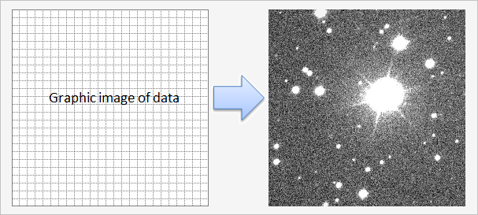

Unit: DeLaFitsGraphics
Type: class
Inherited from: TFitsGraphic
Description:
The class is designed to create a graphic image of the data in BMP format .
.
The graphic image of data - is the two-dimensional array of indexes of the palette, see TFitsGraphic.GraphicRead. TFitsBitmap converts this two-dimensional array into a BMP format, see TFitsBitmap.BitmapRead.

Protected methods
Init override |
Initializes the fields of the class |
Constructor & Destructor
destructor Destroy; override |
Destroys an object and all related objects, except stream! |
Public methods
BitmapRead overload |
Creating the graphic image of the data in BMP format |
BitmapRelease |
Frees memory for internal buffer |
See Also:
—
Created with the Personal Edition of HelpNDoc: Easy EBook and documentation generator
Copyright © 2013-2016, Evgeniy Dikov
Support: delafits.library@gmail.com
Sources: https://github.com/felleroff/delafits